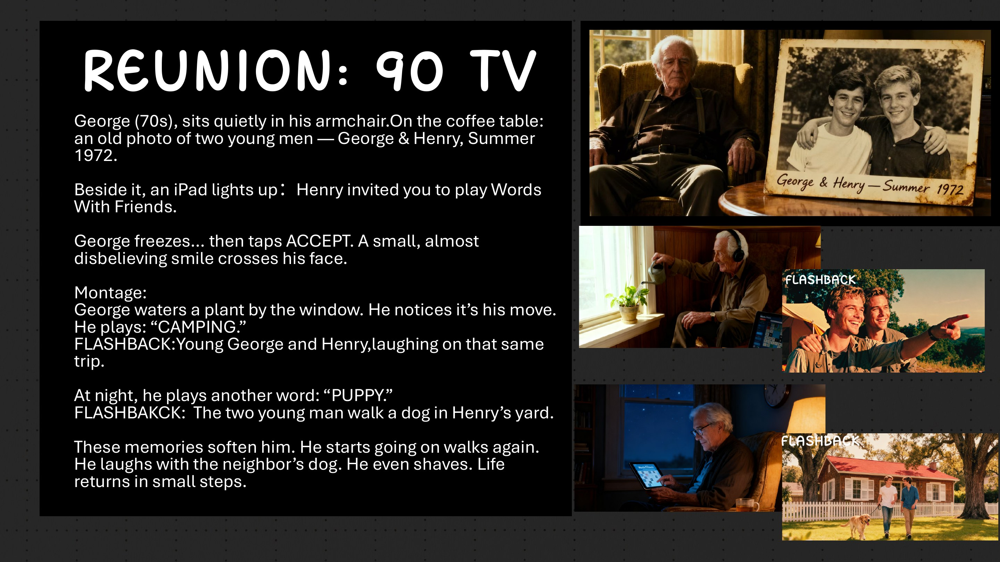
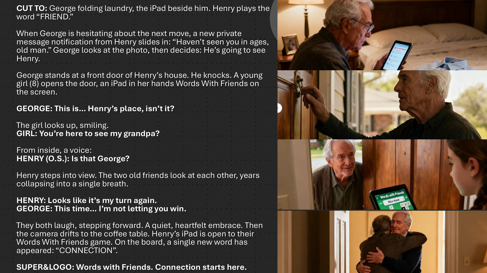

Words With Friends
A single word can carry a lifetime.

Not a game. A bridge.
Words With Friends already connects people across a board. The opportunity was to make that connection feel human again: less about scoring points, more about the memories hiding inside ordinary words.

Language remembers what we forget.
A familiar word can reopen a place, a person, an entire season. The campaign turns each play into a trigger for memory—and the screen into a quiet route back to someone who once mattered.
Reunion
A 90-second film follows George as an invitation from an old friend arrives on his iPad. CAMPING. PUPPY. Each move cuts to a shared memory, and a life that had grown still begins moving again.

Small words. Cinematic consequences.
The script moves between quiet present-day rituals and warm, kinetic flashbacks. The game interface stays secondary; expression, pacing and the space between turns carry the emotion.
From thought
to touchpoint.
- 90-second film script
- Narrative concept
- Storyboard direction
“The strongest product truth was not competition. It was continuity—the possibility that a friendship can resume with one small move.”